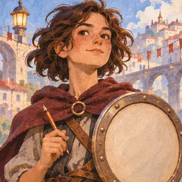
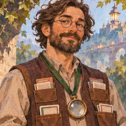
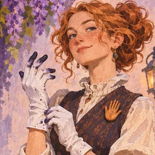
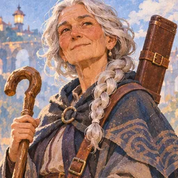

Тара Шаг
воин 3 · ОЗ 31 · КД 11 · Скорость 30 фтВопросительница, замечающая границы
Короткий плащ, медный карандаш и круглый щит с чистой внутренней стороной.
Тебя пригласили после того, как ты сумела остановить спор одним точным вопросом.
Открыть фигурку для поля
Оружие и заклинания
Оружие · Длинный меч, Ручной топор

Мирон Вязь
плут 3 · ОЗ 24 · КД 13 · Скорость 30 фтВопроситель, проверяющий слова
Жилет с карманами для карточек и круглая лупа на зелёной ленте.
Тебе интересно, как одна честная фраза превращается в два несовместимых вывода.
Открыть фигурку для поля
Оружие и заклинания
Оружие · Рапира, Короткий лук

Сольви Роса
жрец 3 · ОЗ 24 · КД 11 · Скорость 30 фтВопросительница, называющая цену
Белые перчатки с чернильными кончиками и деревянная брошь в форме раскрытой ладони.
Ты согласна слушать трудное дело, если никто не назовёт потерю мелочью за другого.
Открыть фигурку для поля
Оружие и заклинания
Оружие · Боевой посох
Заклинания · Лечащее слово, Обнаружение магии

Ника Плёт
волшебник 3 · ОЗ 20 · КД 12 · Скорость 30 фтВопросительница, строящая наглядные схемы
Пальцы в цветном меле, тёмный берет и складная дощечка.
Ты умеешь показывать различие между предметом и правилом без длинной речи.
Открыть фигурку для поля
Оружие и заклинания
Оружие · Боевой посох
Заклинания · Обнаружение магии, Туманный шаг

Дем Рун
воин 3 · ОЗ 31 · КД 11 · Скорость 30 фтВопроситель, испытывающий исключения
Дорожная куртка, мягкие сапоги и коробочка с обычными пуговицами для примеров.
Тебя тревожат правила, которые кажутся добрыми только на одном удобном случае.
Открыть фигурку для поля
Оружие и заклинания
Оружие · Длинный меч, Ручной топор

Ива Ласт
плут 3 · ОЗ 24 · КД 13 · Скорость 30 фтВопросительница, замечающая пропуски
Каштановый шарф и блокнот с двумя колонками: «слышала» и «решила».
Ты хочешь понять, почему уверенный тон иногда принимают за доказательство.
Открыть фигурку для поля
Оружие и заклинания
Оружие · Рапира, Короткий лук

Ари Рябь
волшебник 3 · ОЗ 20 · КД 12 · Скорость 30 фтВопроситель, проверяющий исполнение
Серебристая коса, дорожная трость и длинный футляр для линейки.
Ты видел немало красивых обещаний, которые нельзя было исполнить буквально.
Открыть фигурку для поля
Оружие и заклинания
Оружие · Боевой посох
Заклинания · Обнаружение магии, Туманный шаг